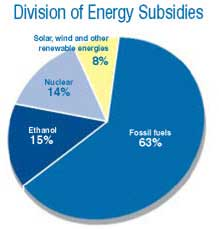

We the people need to motivate Uncle Sam to create a rational andrevolutionary energy strategy.
Fact: All forms of energy are subsidized. Oil. Gas. Coal.Nuclear. Renewables. No type of energy stands alone in the market,free of tax breaks, research grants or other forms of governmenthelp.
Fact: Subsidies are ultimately funded by the taxes wepay.
Americans pay a great deal to subsidize energy resources, but giventhe nation's growing energy problems, which subsidies make senseand which don't?
The question is timely because our current energy habits are notsustainable for the environment, our national security or oureconomic health. The United States must shift to clean, diverse,more secure sources of energy used more efficiently. Subsidies canbe a major tool in this effort. Those that move us closer to thatgoal deserve support. Those that don't should be terminated.
Unfortunately, Congress' approach to energy policy has been tokowtow to special interests. The Energy Policy Act of 2005 was awasted opportunity of historic proportions. The legislation wasstuffed with handouts that will sustain our addiction to oil.
How much do energy handouts cost? While subsidies can be difficultto quantify, the National Commission on Energy Policy ? a panel ofbusiness, government, science and environmental leaders ? estimatedthat federal energy subsidies totaled between $37 billion and $64billion in 2003.
Subsidies also can take many forms. Between 1998 and 2003, thefederal government provided $11.8 billion in research anddevelopment grants, in roughly equal thirds going to nuclear,fossil fuels, and to efficiency and renewable resources. Between1990 and 2002, oil and gas companies reaped nearly $12 billion as aresult of improper reporting of royalties due.
Redirecting subsidies is an essential component of a strategy toaddress the energy problems on our nation's doorstep. The strategymust include greater energy efficiency, lower carbon emissions, andreplacing oil and other conventional fossil fuels with solar, wind,biofuels and other clean energy sources.
Time is short to change our energy course to a new, less risky pathof lower costs, less danger and wise stewardship of the onlyatmosphere that we have. Congress can be prodded to act in thecountry's best interests only if citizens demand that lawmakersenact a rational energy strategy equal to the difficulties ahead.Only we, the people, can supply the necessary will.
For more on this topic, seeDeclare Energy Independence in the June/July 2006 issue ofMother Earth News.
Jim DiPeso is the policy director of Republicans for EnvironmentalProtection (REP America), a grass-roots organization that seeks torestore the Republican conservation tradition.
|
 Fossil fuels traditionally receive the lion's share of federal energy subsidies, which are funded by our taxes. A better strategy for the long term would be to shift that support to developing renewable energy incentives. |
|
|